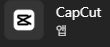
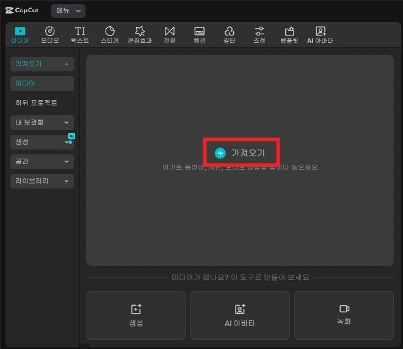
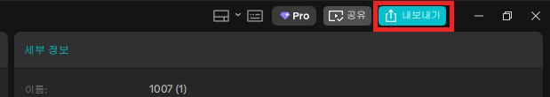
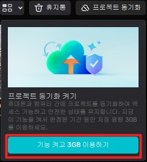

DAY 07AI 프롬프트 엔지니어링 2
CapCut 편집과 AI 음악 만들기
영상 편집이 처음인 분을 위한 시간입니다. 지난 시간에 만든 애니메이션 장면들을 CapCut에서 이어 붙이고, 자르고, 목소리를 넣고, AI(Lyria·Suno)로 직접 만든 음악까지 깔아 속도와 페이드를 다듬은 뒤 한 편의 영상으로 내보냅니다.
1.오늘의 수업 & 진행 순서
지금까지는 AI에게 만들어 달라고 했습니다. 편집은 반대로, 이미 있는 영상에서 무엇을 쓰고, 무엇을 버리고, 어떤 순서로 보여 줄지 내가 정하는 일입니다. 기능을 다 외울 필요는 없습니다. 오늘 배우는 몇 가지만으로도 한 편이 완성됩니다.
DAY 06에서 만든 장면 영상 scene01~05 (없으면 DAY 05에 만든 영상도 괜찮아요)
이어폰 (소리 확인용), 마이크가 있는 이어폰이면 목소리 녹음까지
2.CapCut 설치하고 화면 익히기
사진에서 빨간 네모가 눌러야 할 곳입니다.
1구글에서 캡컷을 검색하고, 주소가 capcut.com인 결과를 누릅니다. 비슷한 이름의 다른 사이트가 섞여 있을 수 있으니 주소를 꼭 확인하세요.

2무료 다운로드(또는 오른쪽 위 다운로드)를 눌러 PC용 프로그램을 내려받고 설치합니다. 옆의 "온라인 사용해 보기"는 웹 버전이라 오늘은 쓰지 않습니다.

설치가 끝나면 시작 메뉴에서 이 아이콘을 찾아 실행합니다.

3왼쪽 위 로그인으로 구글 계정 등에 로그인한 뒤, 가운데 가장 큰 프로젝트 만들기를 누르면 편집 화면이 열립니다. 로그인 아래 프로에 가입하기는 유료 결제이니 누르지 않아도 됩니다.

편집 화면은 네 구역입니다

메뉴 이름과 위치는 CapCut 업데이트에 따라 조금씩 다를 수 있습니다.
3.실습: 영상 이어 붙이기
- 1재료 창의 가져오기를 눌러 scene01~05를 한꺼번에 선택해 불러옵니다.
- 2scene01을 타임라인으로 끌어다 놓습니다. 이어서 scene02를 scene01 바로 뒤에 붙입니다. 05까지 반복.
- 3Space(스페이스바)로 처음부터 재생해 봅니다.
- 4순서를 바꾸고 싶으면 클립을 잡고 원하는 자리로 끌어 옮깁니다.


4.실습: 자르기와 나누기
AI 영상은 처음 1초가 멈춰 있거나, 끝에 이상하게 일그러지는 경우가 많습니다. 좋은 부분만 남기는 것이 편집의 첫걸음입니다.
편집의 비밀 한 가지
여행 사진 100장의 법칙
여행 가서 사진을 100장 찍었다고 100장을 다 SNS에 올리지는 않잖아요. 눈 감은 사진, 흔들린 사진, 손가락이 렌즈를 가린 사진은 조용히 앨범 속으로 들어가고, 세상에 나가는 건 "인생샷" 몇 장뿐입니다.
AI 영상도 똑같습니다. 장면을 넉넉하게 여러 개 만들어 두고, 그중 가장 눈길을 확 끄는(후킹) 3~5초, 또는 가장 자연스러운 3~5초만 골라 씁니다.
8초 만들어서 3초만 쓰면 아깝다고요? 나머지 5초는 "촬영장 비하인드"일 뿐입니다. 버리는 용기가 곧 편집 실력이에요.
클립의 왼쪽 끝이나 오른쪽 끝을 잡고 안쪽으로 끌면 그만큼 잘립니다. 다시 끌어 늘리면 되살아납니다.
이상한 구간의 시작에 재생 막대를 두고 Ctrl + B(분할), 끝에서 한 번 더 Ctrl + B. 가운데 조각을 선택해 Delete.
| 자주 쓰는 키 | 하는 일 |
|---|---|
| Space | 재생 / 멈춤 |
| Ctrl + B | 재생 막대 위치에서 클립 나누기(분할) |
| Delete | 선택한 클립 지우기 |
| Ctrl + Z | 방금 한 일 되돌리기 — 마음 놓고 실험하세요 |
5.레이어(트랙)의 개념 — 위에 있는 것이 앞에 보인다
레이어
투명한 필름을 여러 장 겹쳐 놓은 것과 같습니다. 타임라인에서 위 줄에 있는 것이 화면 앞쪽에 보이고, 아래 줄에 있는 것은 뒤에 가려집니다. 소리는 화면에 보이지 않으니 가장 아래 줄에 놓입니다.
직접 확인해 보기
- 1재료 창의 텍스트 → 기본 텍스트를 끌어 첫 장면 위 줄에 놓고, 애니메이션 제목을 씁니다.
- 2지난 시간 히어로샷 이미지를 텍스트와 메인 영상 사이 줄에 놓아 봅니다. 미리보기에서 작게 줄여 구석에 둡니다.
- 3히어로샷을 텍스트보다 위 줄로 옮기면 제목이 가려집니다. 이것이 레이어입니다. 확인했으면 히어로샷은 지웁니다.
- 4텍스트 클립의 길이를 끌어 조절하면 제목이 보이는 시간이 바뀝니다.
6.실습: 목소리 넣기 — 대본부터 AI 목소리까지
① 대본 받기 — ChatGPT · Gemini에서
DAY 06에 애니메이션을 기획했던 ChatGPT(또는 Gemini) 채팅에 이어서 보내세요. 그 채팅에는 장면 내용이 이미 있어서 따로 붙여넣지 않아도 됩니다. 새 채팅이라면 둘째 줄에 장면 내용을 붙여넣으세요.
② 받은 대본을 목소리로 — 셋 중 하나
텍스트로 대본을 넣고 선택 → 오른쪽 설정 창의 텍스트 음성 변환에서 목소리를 고릅니다. 텍스트 클립은 지워도 소리는 남습니다.
목소리에 Pro 표시가 붙어 있으면 유료입니다. 쓰려는 한국어 목소리가 모두 Pro라면 방법 2나 3을 쓰세요.
타임라인 위의 마이크(녹음) 버튼을 누르고 대본을 읽습니다. 재생 막대 위치부터 녹음됩니다. 자기소개 영상이라면 내 목소리가 가장 진정성 있습니다.
더 자연스럽고 감정이 담긴 목소리가 필요할 때. 사이트에서 대본을 읽힌 뒤 MP3로 내려받아 CapCut 가져오기로 넣습니다. 다음 7번에서 자세히 봅니다.
효과음 — 재료 창의 오디오에서 발소리, 문 여는 소리처럼 검색해 끌어 놓습니다. 강조할 순간에만.
AI 영상의 원래 소리 끄기 — 메인 영상 줄 맨 앞의 스피커 아이콘으로 한 번에. 클립 하나만은 클립 선택 → 설정 창 오디오에서 볼륨을 내립니다.
7.TTS — AI 목소리 사이트 (ElevenLabs · 타입캐스트)
TTS(Text To Speech)란? — 글자를 목소리로
글을 넣으면 AI가 사람 목소리로 읽어 주는 기술입니다. 예전 안내 방송처럼 딱딱한 기계음과 달리, 요즘 AI 목소리는 숨 쉬는 소리·억양·감정까지 흉내 내서 사람이 읽은 것처럼 들립니다.
목소리 종류, 말 빠르기, 감정을 골라 녹음실 없이 내레이션을 만들 수 있습니다. CapCut의 "텍스트 음성 변환"도 TTS이고, 아래 두 사이트는 TTS를 전문으로 하는 서비스입니다.
이런 데 씁니다
ElevenLabs 일레븐랩스
elevenlabs.io
사람이 읽은 것처럼 자연스러운 AI 목소리로 잘 알려진 해외 서비스입니다. 한국어를 포함해 여러 언어로 읽어 주고, 목소리 목록에서 고르거나 "따뜻한 30대 여성 목소리"처럼 원하는 목소리를 글로 설명해 만들 수도 있습니다.
이렇게 써요
- 1. 회원가입 후 텍스트 음성 변환(Text to Speech) 열기
- 2. 받은 대본을 붙여넣기
- 3. 목소리를 고르고 생성 → 들어 보기
- 4. 마음에 들면 내려받기(MP3)
무료와 유료
- · 무료 — 매달 일정 크레딧(요금 페이지 기준 월 1만 크레딧). 짧은 내레이션 연습에 충분합니다
- · 무료로 만든 목소리는 상업적 이용 불가
- · 유료 — 상업적 이용, 내 목소리 복제 기능
이럴 때 좋아요 — 해외 느낌의 세련된 목소리, 영어 등 다른 언어 내레이션이 필요할 때
타입캐스트 Typecast
typecast.ai
우리나라 회사(네오사피엔스)가 만든 서비스입니다. 한국어 목소리와 캐릭터가 많아 우리말 내레이션에 맞는 목소리를 고르기 쉽고, 문장마다 기쁨·슬픔 같은 감정이나 말 빠르기를 조절할 수 있습니다.
이렇게 써요
- 1. 회원가입 후 새 프로젝트 만들기
- 2. 목소리(캐릭터) 고르기
- 3. 받은 대본을 붙여넣고, 문장마다 감정·빠르기 조절
- 4. 들어 보고 오디오 내려받기(MP3)
무료와 유료
- · 무료 — 내려받을 수 있는 분량이 적습니다(요금 페이지 기준 약 5분 분량)
- · 무료는 출처 표시가 필요하고 상업적 이용 불가
- · 유료 — 상업적 이용 가능
이럴 때 좋아요 — 자연스러운 한국어 내레이션, 감정이 실린 캐릭터 목소리가 필요할 때
메뉴 이름과 위치는 사이트 업데이트에 따라 다를 수 있습니다.
AI 목소리 쓸 때 지킬 것
- · 연습용은 무료로 충분합니다. 광고·판매용으로 쓸 영상이라면 유료 플랜과 이용약관을 먼저 확인하세요.
- · 다른 사람의 목소리를 허락 없이 복제하지 않습니다. 목소리 복제는 내 목소리로만 합니다.
- · 크레딧·내려받기 분량·요금은 자주 바뀝니다. 각 사이트의 요금 페이지에서 확인하세요.
8.실습: 소리 다듬기 — 위치·길이·볼륨
소리 클립도 영상과 똑같이 끌어 옮기고, 끝을 잡아 줄이고, Ctrl + B로 나눌 수 있습니다.
이어폰을 끼고 확인
- 내레이션이 또렷하게 들린다
- 문장과 장면이 맞게 나온다
- 음악이 갑자기 크거나 끊기지 않는다
- 영상이 끝났는데 소리만 남지 않는다
9.AI로 음악 만들기 — Lyria와 Suno
작사·작곡·연주·노래를 AI가 한 번에
원하는 음악을 글로 설명하면 AI가 곡을 통째로 만들어 줍니다. 악기를 다루거나 악보를 읽을 줄 몰라도 됩니다. 우리가 할 일은 "어떤 음악이 필요한지" 정확히 설명하는 것뿐입니다. 오늘은 두 가지 도구를 씁니다.
- 1. Gemini 입력창 옆 +(도구) → 음악 만들기
- 2. 원하는 음악을 글로 설명해 보내기 (이미지·영상을 올려 "이 분위기에 맞게"도 가능)
- 3. 마음에 들면 내려받기
기본 곡 길이는 약 30초. 계정 종류에 따라 더 긴 곡(최대 약 3분) 기능이 열려 있기도 합니다.
- 1. suno.com(또는 Suno 앱)에 로그인 → Create(만들기)
- 2. 간단히: 원하는 곡을 한 줄로 설명 / 자세히: 가사 칸과 스타일 칸을 나눠 입력
- 3. 한 번에 두 곡 정도가 만들어지니 들어 보고 고르기
보컬·가사·곡 구성까지 세밀하게 만들고 싶을 때 지금도 가장 많이 쓰이는 도구입니다.
| Lyria (Gemini) | Suno | |
|---|---|---|
| 이럴 때 | 영상에 깔 짧은 배경음악을 빨리 | 가사·보컬이 있는 노래, CM송, 주제가 |
| 곡 길이 | 기본 약 30초 | 몇 분짜리 완성곡까지 |
| 무료로 쓰면 | Gemini 계정으로 사용 (요금제에 따라 사용량 차이) | 하루 50크레딧으로 만들기 가능. 다만 내려받기가 제한되고 비상업적 용도만 |
| 유료로 쓰면 | 더 많이, 더 긴 곡 | 구독 중 만든 곡은 내 소유 + 상업적 이용 가능, 월 내려받기 수 늘어남 |
10.음악을 주문할 때 정하는 것 — 한눈에 보는 표
아래 표에서 하나씩 골라 이어 쓰면 그대로 음악 프롬프트가 됩니다. 전부 정할 필요는 없지만, 용도·장르·분위기·보컬 여부 네 가지는 꼭 넣으세요.
| 요소 | 무엇을 정하나 | 고를 수 있는 예 |
|---|---|---|
| 용도 ★ | 어디에 쓸 음악인가 | 애니메이션 배경음악 · 광고 CM송 · 자기소개 영상 · 매장 배경음악 |
| 장르 ★ | 어떤 종류의 음악인가 | 아래 장르 표 참고 |
| 분위기 ★ | 듣는 사람이 느낄 감정 | 밝은 · 따뜻한 · 신나는 · 감동적인 · 긴장감 있는 · 몽환적인 · 귀여운 |
| 보컬 ★ | 노래가 있나, 누가 부르나 | 보컬 없음(연주곡) · 여성 / 남성 / 아이 목소리 · 합창 · 맑은 · 허스키한 |
| 빠르기(템포) | 곡이 얼마나 빠른가 | 느리게 · 보통 · 빠르게. 숫자로 쓰고 싶으면 BPM(1분에 박자 수) — 대략 70 잔잔함 / 100 경쾌함 / 120 이상 신남 |
| 악기 | 어떤 소리가 중심인가 | 피아노 · 어쿠스틱 기타 · 우쿨렐레 · 신시사이저 · 드럼 · 베이스 · 현악기 · 실로폰 · 관악기 |
| 가사 | 무슨 말을 노래하나 | 언어(한국어·영어·일본어) · 주제 · 꼭 넣을 단어(가게·주인공 이름) · 직접 쓰거나 AI에게 맡기기 |
| 구성 | 어떻게 시작하고 끝나나 | 전주(인트로) → 절 → 후렴 → 마무리(아웃트로) · 짧은 곡은 "후렴 위주로" |
| 포인트 요소 | 기억에 남는 한 방 | 반복되는 후렴 한 줄 · 박수 · 휘파람 · 잠깐 멈췄다 터지는 부분 · 효과음 |
| 길이·끝 | 영상에 맞추기 쉬운가 | 영상 길이에 맞게 · 끝은 서서히 작아지게(페이드아웃) 또는 깔끔하게 끝나게 |
장르 고르기
11.실습: 내 애니메이션 음악 만들어 넣기
표에서 고른 것을 아래 틀에 채웁니다. Lyria에는 그대로 붙여넣고, Suno에서 자세히 만들 때는 장르·분위기·빠르기·악기·보컬은 스타일 칸에, 가사는 가사 칸에 나눠 넣습니다. 가사에 [Verse] [Chorus]처럼 구간 이름을 붙이면 곡 구성을 정할 수 있습니다. 마음에 들지 않으면 한 가지만 바꿔 다시 만드세요. ("빠르기만 조금 느리게", "보컬 없이")
- 1만든 음악을 내려받아 CapCut 가져오기 → 맨 아래 소리 줄에 놓기
- 2영상보다 길면 끝을 잘라 내고, 내레이션이 있으면 음악 볼륨을 낮추기
- 3시작과 끝은 14번에서 배우는 페이드 인·아웃으로 부드럽게
12.직접 만든 음악, 무엇이 좋을까? — 저작권과 쓰임새
- · 유명한 가요나 드라마 음악을 영상에 깔려면 원래 그 곡 주인의 허락이 필요합니다. 허락 없이 올리면 유튜브 같은 곳에서 저작권 신고, 소리 끄기, 수익 제한이 생길 수 있습니다.
- · AI로 새로 만든 곡은 남의 곡을 가져다 쓴 것이 아니라서, 이런 문제를 피하기 쉽습니다.
- · 내 영상의 길이와 분위기에 맞춰 주문할 수 있습니다.
- · 가사에 가게·브랜드·주인공 이름을 넣을 수 있습니다.
- · 마음에 들 때까지 다시 만들 수 있고, 무료 음원을 한참 찾아 헤매는 시간이 줄어듭니다.
- · 다른 사람 영상과 같은 음악이 겹치지 않습니다.
"상대적으로" 안전한 것이지, 무조건 안전한 것은 아닙니다
- · 광고·판매 등 돈을 버는 데 쓰려면, 쓰는 서비스의 이용약관에서 상업적 사용이 되는지 먼저 확인하세요. 서비스와 요금제마다 다릅니다. 예를 들어 Suno는 무료로 만든 곡은 Suno 소유이고 비상업적으로만 쓸 수 있으며, 유료 구독 중에 만든 곡만 내 소유로 상업적 이용이 됩니다. 나중에 결제해도 무료일 때 만든 곡의 조건은 바뀌지 않습니다.
- · 기존 노래 가사를 넣거나 "○○ 노래와 똑같이"처럼 요청하지 않습니다. 남의 곡과 비슷하게 나오면 문제가 될 수 있습니다.
- · 사람의 창작이 거의 들어가지 않은 AI 결과물은 내 저작물로 인정받기 어려울 수 있습니다. 문화체육관광부 안내(2023)도 사람의 창작적 개입이 없는 AI 결과물은 저작권 등록이 되지 않는다고 보고, Suno 도움말도 AI가 100% 만든 음악은 저작권 보호를 받기 어렵다고 안내합니다. 단, 가사를 직접 썼다면 그 가사는 내 것입니다. 즉, 남이 내 곡을 가져다 써도 막기 어려울 수 있습니다.
- · Gemini에서 만든 곡에는 귀로 들리지 않는 AI 제작 표시(SynthID)가 들어 있습니다. 사람이 만든 곡이라고 속이는 데 쓰지 않습니다.
13.실습: 영상 속도 조절하기
클립을 선택하고 오른쪽 설정 창의 속도를 엽니다. 숫자가 1보다 크면 빨라지고(길이가 짧아짐), 1보다 작으면 느려집니다(길이가 길어짐).
14.실습: 페이드 인·아웃
음악 클립 선택 → 설정 창의 오디오에서 페이드 인·페이드 아웃 길이를 1~2초로. 음악이 갑자기 시작하거나 뚝 끊기지 않습니다.
첫 클립 선택 → 설정 창 애니메이션 → 인에서 페이드 인, 마지막 클립은 아웃에서 페이드 아웃. 장면 사이는 재료 창 전환에서 디졸브(겹쳐 바뀌기) 하나면 충분합니다.
전환 효과는 화려할수록 좋은 것이 아닙니다. 먼저 효과 없이 보고, 어색한 곳에만 넣으세요.
15.실습: 내보내기 (영상 파일로 저장)


- 1오른쪽 위 내보내기
- 2제목과 저장 위치(예: 바탕화면) 정하기
- 3해상도 1080p, 형식 MP4, 프레임 30 — 처음엔 이대로
- 4저장된 파일을 직접 열어 처음부터 끝까지 한 번 더 봅니다. 편집 화면에서는 괜찮았는데 파일에서 문제가 보이기도 합니다.
편집 중인 프로젝트는 CapCut 첫 화면에 자동으로 남아 있습니다. 다음 시간 최종 프로젝트에서 오늘 배운 순서를 그대로 씁니다.


집에서 이어서 하려면 — 프로젝트 동기화
첫 화면 프로젝트 목록 오른쪽 위의 프로젝트 동기화를 켜면, 같은 계정으로 로그인한 다른 컴퓨터나 휴대폰에서도 프로젝트를 열 수 있습니다. 무료로 쓸 수 있는 용량이 정해져 있습니다(캡처 화면 기준 3GB).
학원·회사 공용 컴퓨터라면 동기화 대신 내보낸 MP4 파일과 장면 영상을 USB나 클라우드에 챙겨 가는 것이 확실합니다.
16.무료와 유료(Pro)는 무엇이 다를까?
오늘 배운 기능은 모두 무료로 쓸 수 있습니다. 유료는 꾸미는 재료와 AI 기능, 고화질이 늘어나는 정도라고 생각하면 됩니다.

이런 창이 뜨면 — 결정은 내가
CapCut을 켜면 Pro 7일 무료 체험을 권하는 창이 뜰 수 있습니다. 구독할지 말지는 각자 선택입니다. 오늘 수업은 무료로 충분하니, 고민되면 오른쪽 위 X로 닫으세요.
체험을 시작한다면 결제 정보 등록 여부와, 체험이 끝난 뒤 자동으로 결제되는지 화면의 조건을 꼭 읽고 결정하세요.
| 무료 | 유료 (Pro) | |
|---|---|---|
| 기본 편집 | 이어 붙이기·자르기·속도·페이드·텍스트·녹음 모두 가능 | 같음 |
| 텍스트 음성 변환 | Pro 표시가 없는 목소리만 (없을 수도 있음) | Pro 표시 목소리까지 |
| 효과·전환·필터·스티커 | 기본 재료 | Pro 표시가 붙은 재료까지 |
| AI 기능 | 일부만, 횟수·길이 제한 | 자동 자막·배경 제거 등 더 넓게 |
| 내보내기 화질 | 1080p까지 | 4K까지 |
| 클라우드 저장 | 적은 용량 | 더 큰 용량, 팀과 공유 |
내보낼 때 결제 창이 뜬다면
작업 중에 Pro 표시가 붙은 효과나 기능을 썼기 때문입니다. 내보내기 창에 어떤 항목이 유료인지 표시되니, 그 효과만 지우거나 무료 효과로 바꾸면 무료로 내보낼 수 있습니다. 요금과 무료 범위는 자주 바뀌니 결제 전에 CapCut 화면에서 확인하세요.
17.오늘의 결과물 & 핵심 정리
편집의 기본 순서
편집은 "무엇을 더할까"보다 "무엇을 뺄까"가 먼저입니다.
다음 수업 예고 — DAY 08
나만의 영상 — 기획부터 완성까지
애니메이션 · 광고 · 자기소개 중 하나를 골라, 기획부터 장면 제작, 음악, CapCut 편집까지 혼자 힘으로 한 편을 완성합니다. 지금까지 배운 것을 모두 씁니다.